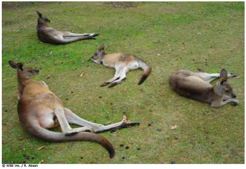

Conferencia de Criaturas

Finalidad 2
Los Scouts trabajan por un mundo en el que existen hábitat naturales suficientes para mantener las especies locales.
Objetivos educativos: Explorar un área natural local. Comprender las conexiones en el ecosistema, de especies locales de plantas y animales; y sus necesidades de hábitat.Demostrar la relación entre las acciones personales y la disponibilidad de hábitat naturales suficientes para mantener las especies locales.Ser concientes de los problemas de conservación global que afectan a la biodiversidad.Edad: Clan
Resumen: Una actividad de discusión para explorar cómo trabajan los ecosistemas y cómo pueden reaccionar a diferentes condiciones ambientales.
Objetivo: Explorar el ecosistema local desde el punto de vista de los animales y plantas que viven ahí.
Materiales y equipo: Tarjetas de seres vivientes locales (por ejemplo, hombre, plantas, insectos, aves, animales etc.). Tarjetas con escenarios y
problemas para ser resueltos por el grupo.
Preparación: Prepare las tarjetas y algunos problemas para preguntar al grupo.
Duración: Media hora.
Lugar: Local de grupo.
Antecedentes: Dentro de un hábitat hay diferentes animales y plantas que existen y cooperan unos con otros y con el ambiente. Esta actividad supone que todas las criaturas dentro de un hábitat tienen voz y voto en cómo opera la comunidad. Esto es muy similar a como se maneja la sociedad
humana. Los seres humanos son parte de la comunidad natural pero ¿consideramos siempre esto lo suficiente? Esta actividad nos lleva a explorar lo que podría pasar si todo dentro de la comunidad natural fuera igual y capaz de dar su opinión.
Guía paso a paso de la actividad
1. Los participantes se sientan en círculo. Pídale a todos escoger una tarjeta. En cada tarjeta hay una criatura diferente que pertenece al ecosistema local. Asegúrese que un participante sea un ser humano. Déle al grupo algunos minutes para pensar sobre su criatura.2. Elija un participante para ser el director del grupo. Éste será el guardián de la Tierra y deberá lmoderar la discusión.
3. Cada participante se presenta a sí mismo. Deberán decirle al grupo qué criatura es, dónde vive, cómo vive, qué come, etc.
4. El director presenta la primera pregunta. Las preguntas deben ser adecuadas para la edad de los participantes y también para el hábitat en cuestión. Reflexionar sobre los problemas que el hábitat podría enfrentar o está enfrentando. Reflexionar sobre los problemas actuales que han afectado el medio ambiente local. Algunos ejemplos de preguntas pueden ser:
El verano ha sido muy seco y la grama no ha crecido normalmente. No hay suficiente para todos. ¿Qué hacemos?
Una nueva familia de (escoger un animal predador apropiado) quiere mudarse a nuestro hábitat. ¿Qué piensa el grupo sobre eso?
El lago ha sido contaminado por la acción de seres humanos. ¿Quién ha sido afectado?
El invierno se aproxima. ¿Están todos preparados?
5. Cada participante hace comentarios. Deben pensar en cómo les afecta la pregunta en su papel de criatura. Anime a los Scouts a fijar posición por su criatura, pues si quieren que la comunidad tome acción en algo; entonces deben decirle al grupo. Por cada pregunta el grupo necesita decidir qué acciones tomar para hacer al ambiente bueno para todas las criaturas.6. Prepare algunas tarjetas adicionales para ciertas criaturas. Éstas deben contener un escenario y una pregunta para hacerle al grupo. Estos problemas deben ser resueltos por el grupo entero.
7. Concluya la conferencia agradeciendo a todas las criaturas por su participación.
Evaluación
1. Después de la conferencia, discuta el efecto del ser humano en el hábitat. Use las siguientes preguntas para generar la discusión.
¿Cómo han afectado las acciones humanas al hábitat?
¿Son los humanos conscientes de cómo sus acciones afectan a las criaturas que viven a su alrededor?
¿Si consideráramos cómo afectan nuestras acciones al ambiente, tomaríamos decisiones diferentes?
Actividades avanzadas
1. Explorar el medio ambiente local para ver cómo las acciones humanas lo están afectando. Si el ambiente está siendo dañado, investigar cómo y por qué, y averiguar que puede hacerse para resolver el problema.
2. Motive a los Scouts a hacer otras investigaciones sobre sus criaturas para aprender más sobre el mismo en el hábitat local. ¿Cuáles son las necesidades de hábitat de este animal y las amenazas a esta especie?
3. Visitar a un refugio o centro de rehabilitación de vida salvaje que ayude a las especies locales.
© World Scout Bureau
Rue du Pré-Jérôme 5
PO Box 91
1211 Geneva 4 Plainpalais
Switzerland
Tel.: (+ 41 22) 705 10 10
Fax: (+ 41 22) 705 10 20
worldbureau@scout.org
scout.org
Reproduction is authorized to National Scout
Organizations and Associations which are
members of the World Organization of the Scout
Rue du Pré-Jérôme 5
PO Box 91
1211 Geneva 4 Plainpalais
Switzerland
Tel.: (+ 41 22) 705 10 10
Fax: (+ 41 22) 705 10 20
worldbureau@scout.org
scout.org
Reproduction is authorized to National Scout
Organizations and Associations which are
members of the World Organization of the Scout